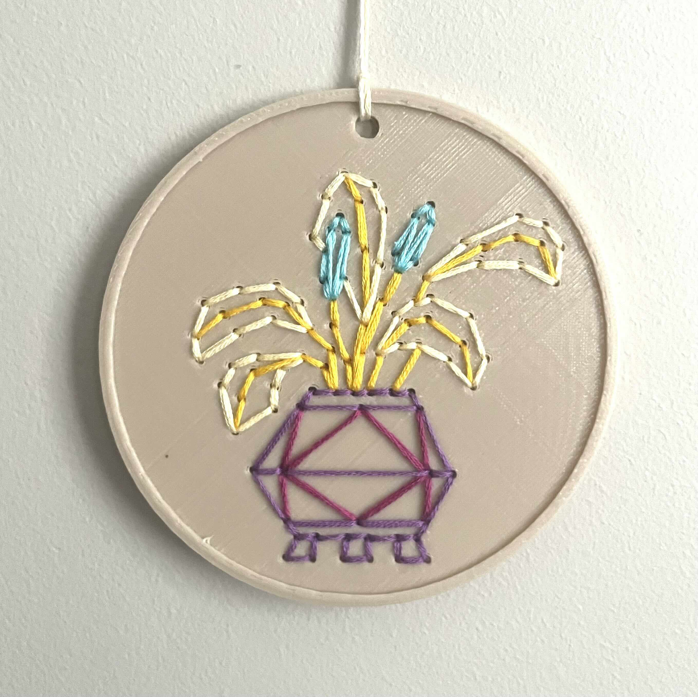
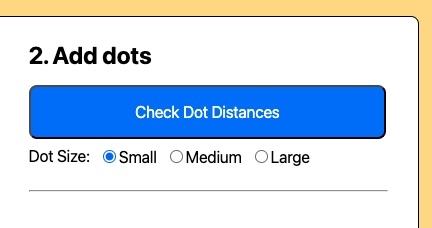
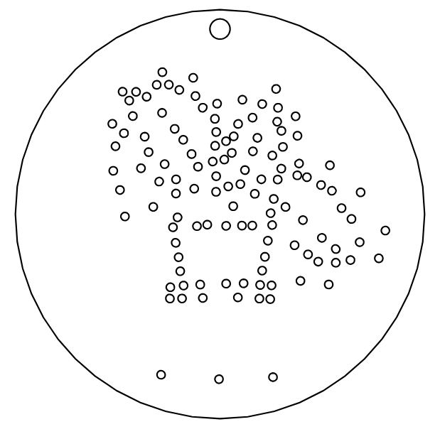

What is Dotter?
Dotter lets you create 3D printed embroidery designs from a reference image or sketch!
In the following images, we started from (1) a sketch and used dotter to make
(2) a 3D model which we finally (3) 3D printed and embroidered.
You can make cool fiber art too!

(3) 3D printed embroidery
1. Upload your reference image
You need an image file (.PNG, .JPEG) to start, such as this example cactus in (1).
This is your reference for making your 3D printed embroidery design.
Use the sliders reposition and resize the reference until
you are happy with how it lines up with the hoop! Look at the video in (2) for reference.
(2) How to adjust sketch reference position
2. Add and remove dots for embroidery
To add dots, use LEFT CLICK on the reference. To delete a dot, use RIGHT CLICK
on that dot. You can move dots around by dragging them (i.e. LEFT CLICK + DRAG).
Look at the video in (1) for reference.
If you have many threads passing through a hole, the small dot (red) is not large enough.
You can change the hole size to medium (orange) and large (green) as well. A rule of thumb is small dot
is good for 1-4 threads through a hole, medium dot is good for 5-6 threads through a hole,
and large dot is good for anything more.
Be sure that dots aren't too close to each other with the "Check Dot Distances" button!
These options are in the menu shown in (2).
(1) How to add, move, and remove dots

(2) Dot size menu and dot distance button
3. Download your design for making!
Once you are finished, you can download your design for making! If you are 3D printing your
design, then click the "Download 3D Model" button. You can choose the export file format too,
but the default STL works great. For reference, the design dimensions should be 105mm x 105mm.
If you are laser cutting, paper cutting (i.e. Cricut), or pen plotting, then click the
"Download SVG Model" button. This will give you an SVG file with millimeter units.
For reference, the design dimensions should be 100mm x 100mm.
(2) An example downloaded 3D design

(3) An example downloaded SVG (2D) design